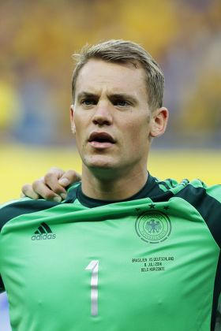
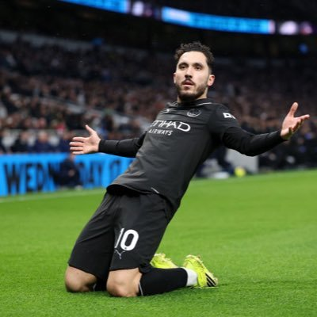

La Defensa en el Fútbol 11
1. Portero
Protege la portería y es el único que puede usar las manos dentro de su área.
Para mi Manuel Neuer es el mejor portero de la historia.

2. Línea de 4 Defensas
- Lateral Izquierdo (LI): Defiende la banda izquierda y sube para apoyar el ataque.
- Defensas Centrales (DFC): Son dos jugadores. Cuidan el centro del área, cortan pases y despejan el balón.
- Lateral Derecho (LD): Defiende la banda derecha y sube para apoyar el ataque.
Mi defensa favorito es Virgil Van Dijk.

El medio campo en fútbol 11
1. Mediocampistas
- Mediocampista Defensivo (MCD): Ayuda a la defensa, recupera balones y distribuye el juego.
- Mediocampista Central (MC): Organiza el juego, distribuye pases y apoya tanto en defensa como en ataque.
- Mediocampista Ofensivo (MCO): Se enfoca en crear oportunidades de gol, asistiendo a los delanteros.
Mis favoritos actualmente son: Rayan Cherki (MCO), Kanté (MCD) y Pedri (MC).

Delanteros en fútbol 11
1. Delanteros
- Extremo Izquierdo (EI): Juega por la banda izquierda, busca desbordar y centrar el balón.
- Delantero Centro (DC): Es el principal goleador, se posiciona en el centro del ataque para finalizar las jugadas.
- Extremo Derecho (ED): Juega por la banda derecha, busca desbordar y centrar el balón.
Mi atacante favorito de toda la vida es Lionel Messi.